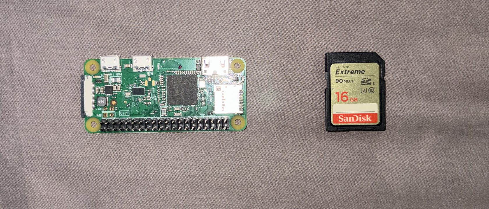
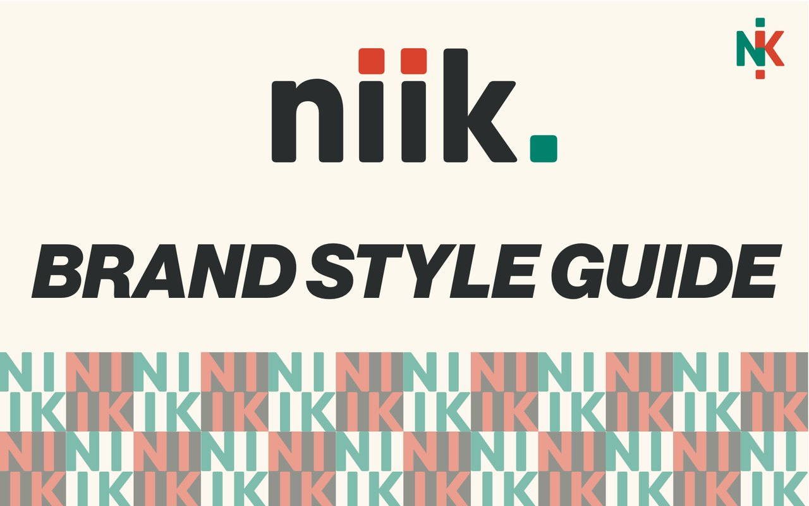
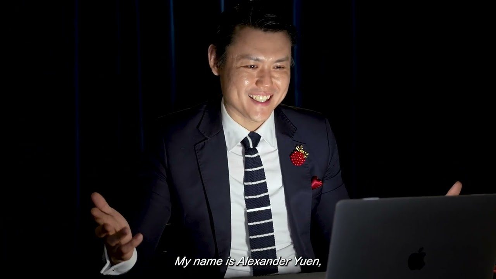

Hardware · PersonalPi Boy
A schedule on an e-ink display for my boyfriend and I to stay updated on each other's lives, named after the Raspberry Pi computer it runs on.
Read the build log
Pick a tag to see everything built with it.

Hardware · PersonalA schedule on an e-ink display for my boyfriend and I to stay updated on each other's lives, named after the Raspberry Pi computer it runs on.
Replaced error-prone spreadsheets at Caregiving Welfare Association with admin portals and dashboards for volunteer tracking, donation reporting, and automated receipts — plus a design system to hold it together.
A collaboration between NUS Fintech Society and HeyMax to reduce planning chaos in Telegram group chats by turning scattered travel links into a structured, AI-assisted trip summary and interactive map.
A mobile app that tackles food waste by simplifying pantry management and meal planning — designed for 18–24 year olds, and aimed at the point of purchase rather than the point of disposal.
A redesign of NUS's canteen pre-ordering app, focused on the one pain point that made students stop trusting it: nobody could tell how long they'd actually be waiting.
A desktop video-conferencing platform built specifically for fitness — so friends at different fitness levels can take the same class together, each doing a version of the exercise that suits them.
A browser extension that makes dense text readable for people it currently shuts out — multilingual readers, and anyone whose attention the modern web has fragmented.
An advocacy toolkit for Kita, a Singaporean youth non-profit: a blind box that unfolds into a brochure, packaged with character keychains — built to turn passive sympathisers into active ambassadors.

Graphic Design · NUSA personal brand system built as a magazine — logo, palette, typography, and a name card reimagined as a wearable lanyard.

Videography · NUSA non-fiction short documentary on Meta Illusions, a local magic business.